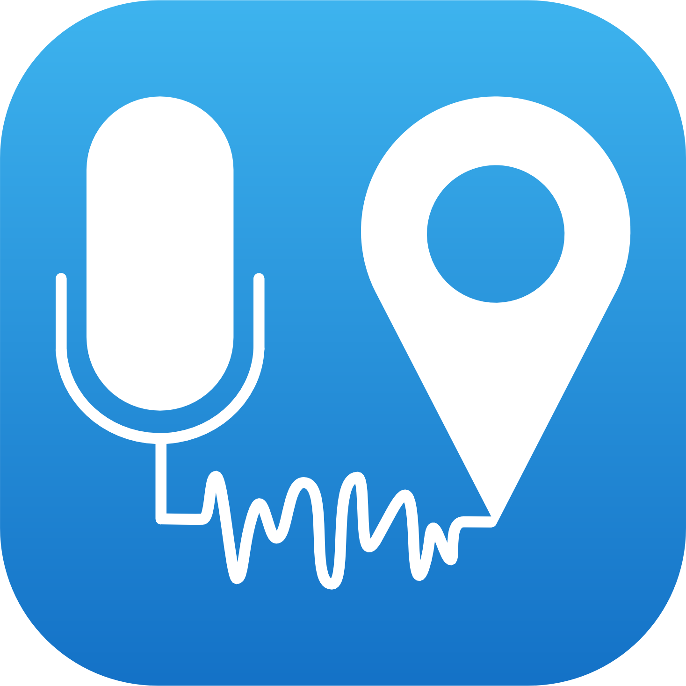

© Ifsttar & CNRS - Tous droits réservés
Contact - noisecapture[at]noise-planet.org
Web - http://noise-planet.org


Introduction
NoiseCapture App est une application dédiée à
l' évaluation de votre environnement
sonore. Avec NoiseCapture App vous pouvez réaliser une mesure de
bruit qui vous informera sur votre exposition au bruit. En complément,
vous pouvez contribuer à l' élaboration
collaborative de cartes de bruit en transferant de manière
totalement anonyme ces
informations vers la communauté.
Principales étapes:
- Réaliser une mesure
- Associer
une description
- Analysez
les résultats
- Explorer la carte
Étapes additionnelles:
Pour aller plus loin:
NoiseCapture App est développée par des spécialistes,
mais gardez bien en mémoire qu'un smartphone ne remplacera jamais un
sonomètre professionnel. Si vous avez besoin d'une expertise avancée,
contactez un professionnel.
La qualité de la mesure dépend des performances
techniques de votre smartphone. En fonction de la nature de votre
téléphone et de la version d'Android utilisée, il est possible que vous ne
puissiez pas mesurer avec une précision suffisante. Reportez-vous au paragraphe
concerné pour plus d'informations.
Réaliser une mesure
Dans le menu principal, sélectionner Mesure, appuyer sur
le boutton Enregistrement pour
démarrer la mesure. Vous pouvez arréter la mesure en appuyant sur le bouton
Stop.
Vous pouvez stopper/reprendre la mesure en utilisant le
bouton Pause. Suivant la valeur
du paramètre correspondant dans le menu Paramètres,
lors de la reprise de la mesure, les dernières secondes de la mesure
peuvent être effacées.
Quelles informations sont affichées lors de la mesure?
- une barre horizontale de type VU-mètre vous informe sur la valeur
instantanée du niveau sonore ('fast level' sur 125ms) en dB(A)
(decibel pondéré A). La couleur de la barre dépend de la valeur
instantanée mesurée et est définie par intervalle de 5dB;
- les valeurs statistiques,
minimum (Min), maximum (Max) et moyenne (Moy), du niveau sonore
instantané sont affichées, en dB(A);
- un chronomètre vous indique la durée
totale de la mesure en secondes;
- une information sur la précision de la localisation
GPS est également donnée;
- le graphique présentant des histogrammes (barres horizontales) vous
donne une information sur le contenu
spectral (fréquentiel) du signal mesuré. En appuyant sur ce
graphique, vous pouvez passer en représentation de type "Spectrogramme"
(temps/fréquence).
Associer une description
À partir du menu Description,
vous pouvez compléter votre mesure par quelques informations de contexte:
- ajouter un texte de description;
- ajouter une photographie;
- évaluer le niveau d'agrément sonore,
en déplaçant le curseur correspondant de 'Désagréable' à 'Agréable';
- sélectionner un ou plusieurs descripteurs
('Tag') définissant le mieux l'environnement sonore mesuré;
- valider la description avec le bouton Valider.
Cette étape, qui vous est proposée par défaut juste après
la mesure, est optionnelle. Néanmoins, pour nous aider dans notre démarche
scientifique, ce type d'information sera très appréciée. Seule
l'information d'agrément sonore et les descripteurs sont transférés vers
la communauté; le texte de description et la photographie ne sont pas
transférées.
Analyser les résultats
À partir du menu Resultats, vous
pouvez accéder aux résultats de mesure, sous forme d'indicateurs
acoustiques décrivant l'environnement sonore. Ces indicateurs sont basés
intégralement sur les valeurs des niveaux sonores équivalents 1 seconde
(Leq,1s). Le Leq,1s est un indicateur standard en acoustique de
l'environnement.
Quelles informations sont affichées sur cette page?
- les valeurs statistiques,
minimum (Min) et maximum (Max), du niveau sonore Leq,1s en dB(A);
- des indices percentiles en
dB(A):
- LA90: niveau sonore pondéré A dépassé 90% du temps. Cet indicateur
est représentatif du bruit de fond;
- LA50: niveau sonore pondéré A dépassé 50% du temps. Cet indicateur
est représentatif du niveau sonore
"moyen";
- LA10: niveau sonore pondéré A dépassé 10% du temps. Cet indicateur
est en général lié au bruit
routier et est corrélé avec la gêne;
- le niveau sonore équivalent en dB(A) sur la durée de la mesure, au
centre de la roue de couleur;
- la répartition de l'exposition au bruit (RNE), qui traduit la
distribution des Leq,1s par intervalle de niveau sonore;
- le spectre sonore en bande tiers d'octave entre 100 Hz et 16 kHz.
Explorer la carte
À partir du menu Carte, vous
pouvez accéder à une représentation cartographique des mesures que vous
avez réalisées, ainsi que celles de l'ensemble de la communauté:
- 'Résultat en cours': affiche la mesure ou le résultat en cours;
- 'Tous les résultats': affiche l'ensemble des mesures présentes dans la
mémoire du smartphone;
- 'Carte de bruit communautaire': affiche un ensemble de cartes et
d'informations obtenus en exploitant l'ensemble des mesures produites
par la communauté.
Explorer l'historique des mesures
À partir du menu Historique,
vous pouvez accéder à l'ensemble des mesures stockées dans la mémoire du
smartphone. En complément, le symbole 'Cloud' vous permez de savoir si la
mesure correspondante a été transférée vers la communauté.
En sélectionnant un élément de l'historique, vous avez accès à plusieurs
actions:
- 'Transférer vers la communauté': si la mesure n'a pas été
automatiquement transférée vers la communauté, vous pouvez forcer le
transfert avec cette action;
- 'Exporter le résultat': vous pouvez exporter/partager une archive ZIP
de la mesure(le fichier README contenu dans l'archive détaille
l'ensemble des données);
- 'Éditer la description': vous pouvez modifier la description et la
photographie. Si la mesure n'a pas encore été transférée, vous pouvez
également modifier les tags et l'agrément sonore;
- 'Afficher le résultat': affiche le résultat conrrespondant;
- 'Montrer sur la carte': affiche la mesure sur la carte;
- 'Effacer': efface définitivement la mesure de la mémoire du
smartphone.
Si une mesure est supprimée de l'historique, alors qu'elle
a déjà été transférée vers la communauté, elle n'est pas supprimée du
serveur. Gardez en mémoire que les données envoyées vers la communauté
sont totalement anonymes (pour plus d'informations, reportez-vous au
paragraphe Vie privée).
Calibrer votre smartphone
À partir du menu Calibrage, vous
avez la possibilité de calibrer votre smartphone.
- La méthodologie de calibrage est basée sur la connaissance d'une Valeur de référence pour le niveau
sonore équivalent (en dB) sur une certaine durée de mesure, obtenue à
partir d'un autre appareil, dit de 'référence' (un calibrateur, un
sonomètre, un smartphone calibré...).
- Suivant les cas, le calibrage peut être réalisée pour une (bande de)
fréquence donnée ou sur une bande large (en global).
- La Valeur de référence est
comparée à la Valeur mesurée
avec le smartphone, afin d'établir un facteur de correction, également
appelé le 'Gain', qui sera appliqué par la suite, sur le signal mesuré.
Plusieurs méthodes de calibrage sont possibles:
- Calibrage manuel à partir d'un appareil
de référence ou d'un calibrateur
- Calibrage manuel à partir d'un appareil
d'un calibrateur
- Calibrage automatique à partir d'un
smartphone calibré
Le calibrage du smartphone est une étape cruciale. Sans
calibrage, soyez assuré que la mesure que vous aurez réalisée a peu de
chance d'être pertinente!
Le facteur de correction est appliqué sur tout le
signal. Un calibrage multi-fréquence n'est pour l'instant pas possible.
Le calibrage est réalisé sur les valeurs en dB et non
en dB(A).
Les durées du compte-à-rebours et du calibrage peuvent être
paramétrées dans le menu Paramètres.
Lors du calibrage, le smartphone et l'appareil de référence
doivent être utilisés de manière similaire à la source de bruit.
Le facteur de correction peut aussi être défini
manuellement dans le menu Paramètres.
Calibrage à partir d'un appareil de
référence
- Réaliser
le calibrage :
- Dans les options de calibrage proposées, choisissez la fréquence
sur laquelle vous souhaitez réaliser le calibrage. Si vous calibrez
à partir d'un appareil de référence (sonomètre par exemple), vous
pouvez également choisir 'Global' dans la liste , afin d'effectuer
un calibrage sur l'ensemble du spectre de mesure. Dans ce dernier
cas, pensez à configurer l'appareil de référence pour qu'il réalise
une mesure sur la même bande de fréquence que votre smartphone;
- Appuyer sur le bouton Démarrer:
- un compte-à-rebours vous permez de vous préparer si
nécessaire;
- une mesure est réalisée automatiquement sur une certaine
durée. Cette durée doit si possible être la même entre
l'appareil de référence et le smartphone;
- Une fois la mesure terminée, entrez la Valeur de référence mesurée
par l'appareil de référence, puis appuyez sur le bouton Appliquer;
- Si vous ne souhaitez pas appliquer la correction obtenue, appuyez
sur le bouton Réinitialiser.
- Tester
le résultat du calibrage
:
- Une fois le facteur de correction obtenu, vous pouvez tester le
calibrage en mode test, en cochant la case 'Test du gain';
- Appluyer sur le bouton Commencer
pour réaliser une nouvelle mesure et faites de même avec l'appareil
de référence;
- A la fin de la mesure, la Valeur
mesurée devrait être équivalente à la Valeur
de référence.
- Compte-tenu de la procédure et des appareils mis en jeu, vous
pouvez considérer comme acceptable une différence jusqu'à 0.5dB,
entre les deux valeurs. Si ce n'est pas le cas, recommencez la
procédure. Si vous ne parvenez pas à réaliser un calibrage avec une
erreur de 0.5dB, vous pouvez vous accetper une erreur jusqu'à 1dB.
Calibrage à partir d'un calibrateur
Pour appliquer cette procédure, vous devez disposer d'un calibrateur acoustique
et d'un microphone externe connecté sur votre smartphone. Le diamètre du smartphone doit être compatible
avec le calibrateur.
- Réaliser
le calibrage :
- Dans les options de calibrage proposées, choisissez la fréquence
sur laquelle vous souhaitez réaliser le calibrage:
- Appuyer sur le bouton Démarrer:
- un compte-à-rebours vous permet de vous préparer si
nécessaire;
- une mesure est réalisée automatiquement sur une certaine
durée. Cette durée doit si possible être la même entre
l'appareil de référence et le smartphone;
- Une fois la mesure terminée, entrez la Valeur de référence mesurée
par l'appareil de référence, puis appuyez sur le bouton Appliquer;
- Si vous ne souhaitez pas appliquer la correction obtenue, appuyez
sur le bouton Réinitialiser.
- Tester
le résultat du calibrage
:
- Une fois le facteur de correction obtenu, vous pouvez tester le
calibrage en mode test, en cochant la case 'Test du gain';
- Appuyez sur le bouton Commencer
pour réaliser une nouvelle mesure et faites de même avec le calibrateur;
- A la fin de la mesure, la Valeur
mesurée devrait être équivalente à la Valeur
de référence.
- Compte-tenu de la procédure et des appareils mis en jeu, vous
pouvez considérer comme acceptable une différence jusqu'à 0.5dB,
entre les deux valeurs. Si ce n'est pas le cas, recommencez la
procédure. Si vous ne parvenez pas à réaliser un calibrage avec une
erreur de 0.5dB, vous pouvez accepter une erreur jusqu'à 1dB.
Calibrage à partir d'un smartphone déjà
calibré
Dans cette méthode, un smartphone déjà calibré avec NoiseCapture, peut à
son tour calibrer un ou plusieurs smartphones. Du coté des microphones à
calibrer, la procédure est entièrement automatique. L'ensemble est
contrôlé par le smartphone de référence.
- Réaliser
le calibrage :
- Le smartphone de référence doit se "positionner" en mode
"émetteur".
- Les smartphones à calibrer doivent se "positionner" en mode
"récepteur".
- Sur le smartphone de référence:
- Choisir la source sonore de référence
- "Bruit rose" : dans ce cas, le smartphone génère un signal de
référence. Il est nécessaire d'utiliser une source sonore
connectée en sans fil avec le smartphone de référence, la source
étant à égale distance de tous les smartphones;
- "Bruit ambiant" : le bruit de l'environnement est utilisé pour
le calibrage. Le niveau sonore doit être suffisamment élevé et
le champ sonore doit être relativement "diffus".
- Appuyer sur Démarrer;
le reste de la procédure est automatique. Vous pouvez annuler le
calibrage en cours avec le bouton Annuler.
Quelles sont les limites d'une mesure
de bruit avec un smartphone?
Spécifications Android
Le document Android
Compatibility Definition Document (CDD) énumère les spécifications
des appareils sous Android: the CDD "enumerates the requirements that
must be met in order for devices to be compatible with the latest
version of Android. To be considered compatible with Android, device
implementations MUST meet the requirements presented in this
Compatibility Definition" ( texte
issu de Android 5.1 CDD).
Nous reprenons ici les spécifications originales en anglais:
According to the CDD:
- The device SHOULD exhibit approximately flat amplitude versus
frequency characteristics: specifically, ±3dB, from 100Hz to 4000Hz.
- Audio input sensitivity SHOULD be set such that a 90dB sound power
level (SPL) source at 1000Hz yields RMS of 2500 for 16-bit samples.
- PCM amplitude levels SHOULD linearly track input SPL changes over at
least a 30dB range from -18dB to +12dB re 90 dB SPL at the microphone.
- Total harmonic distortion SHOULD be less than 1% for 1kHz at 90dB SPL
input level at the microphone.
In addition, it is specified that " While some of the requirements
outlined in this section are stated as SHOULD since Android 4.3, the
Compatibility Definition for a future version is planned to change these
to MUST. Existing and new Android devices are very strongly encouraged
to meet these requirements, or they will not be able to attain Android
compatibility when upgraded to the future version."
Que faut-il comprendre ?
- La qualité d'une mesure dépend à la fois du matériel et de la version
d'Android;
- La réponse fréquentielle est 'acceptable' entre 100Hz et 4000Hz;
- La réponse en amplitude du niveau sonore est quasi-linéaire entre
-18dB et +12dB autour de 90dB.
En conclusion, dans la situation
actuelle, même après un calibrage rigoureux, ll n'est pas possible
d'assurer avec certitude une qualité de mesure au delà de 4000 Hz, ainsi
que pour des faibles et forts niveaux sonores. On peut toutefois penser
que les prochaines générations de smartphone permettront une meilleure
mesure acoustique dans l'avenir.
Réaliser la "meilleure" mesure possible
Quelques recommandations :
- Le smartphone doit être calibré
(voir Calibrage);
- Le smartphone ne doit pas être dans
la poche;
- Le smartphone doit être tenu à la
main;
- Le microphone ne doit pas être
masqué;
- Il est possible d'utiliser un microphone
externe de meilleure qualité.
Dans un objectif de contribution à des cartes
de bruit de l'environnement extérieur, nous vous remercions de respecter
également ces quelques recommandations :
- La mesure doit être réalisée en dehors des bâtiments (si vous réalisez
une mesure en intérieur, utiliser le 'Descripteur' correspondant dans la
description de la mesure);
- Assurez-vous d'avoir une bonne localisation GPS;
- N'oubliez pas de préciser les 'Descripteurs' (voir Description).
Ressources